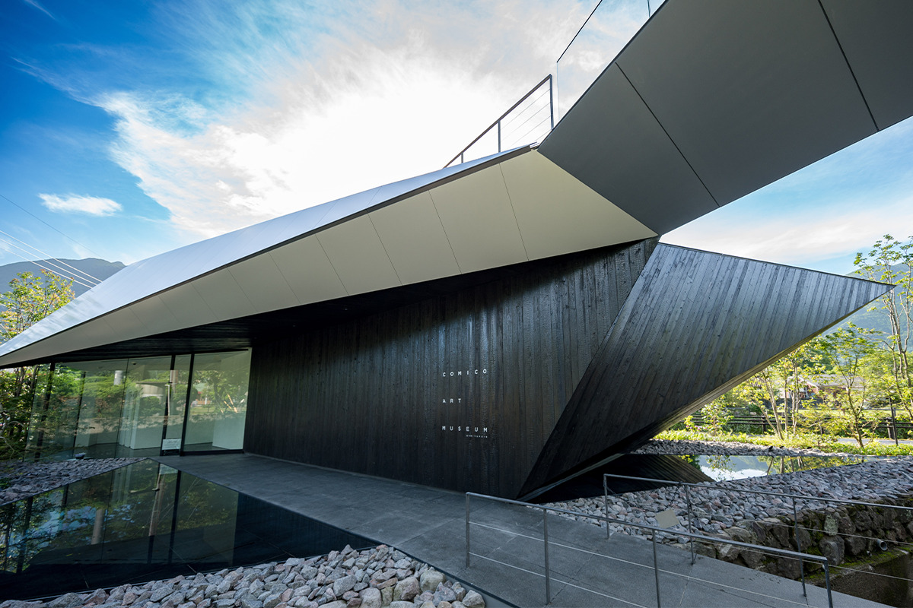
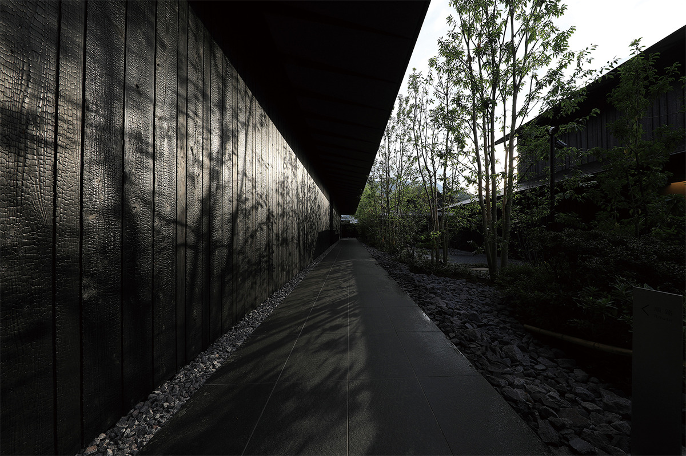
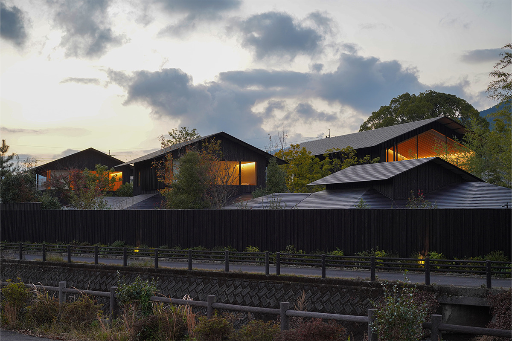
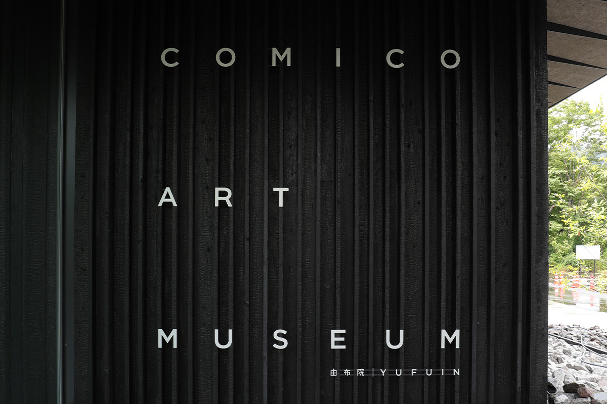
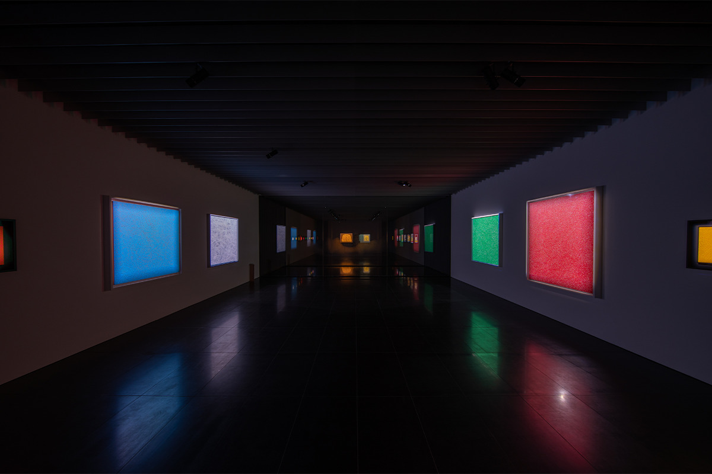
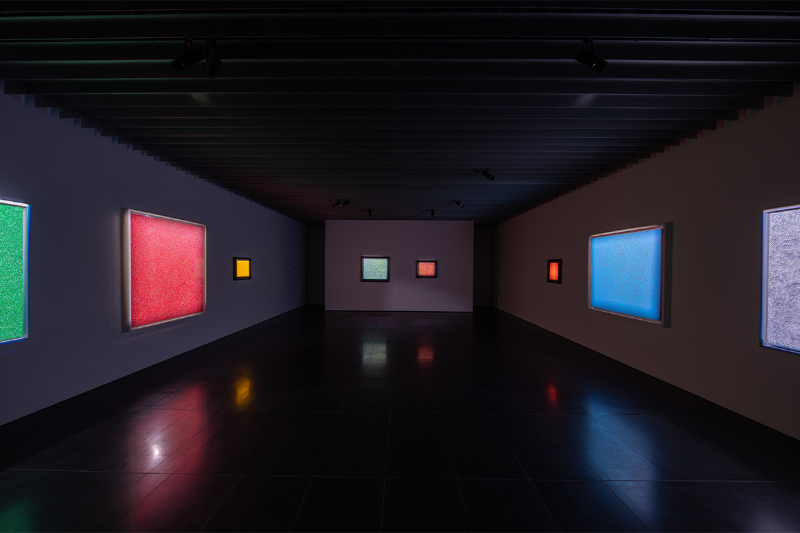
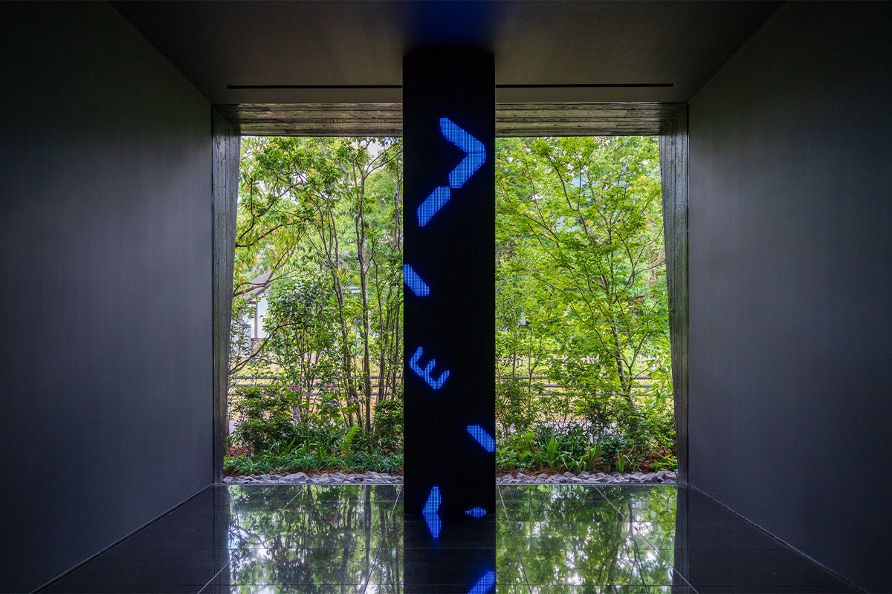
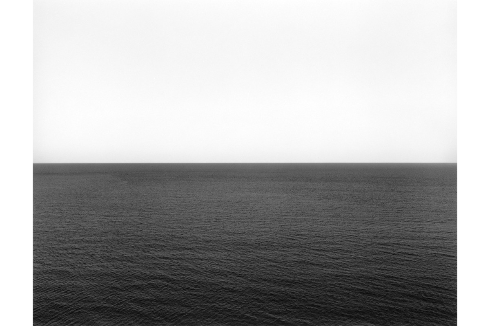
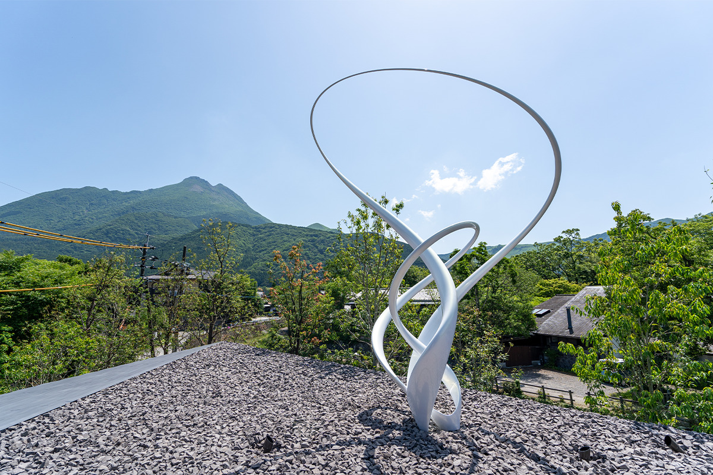
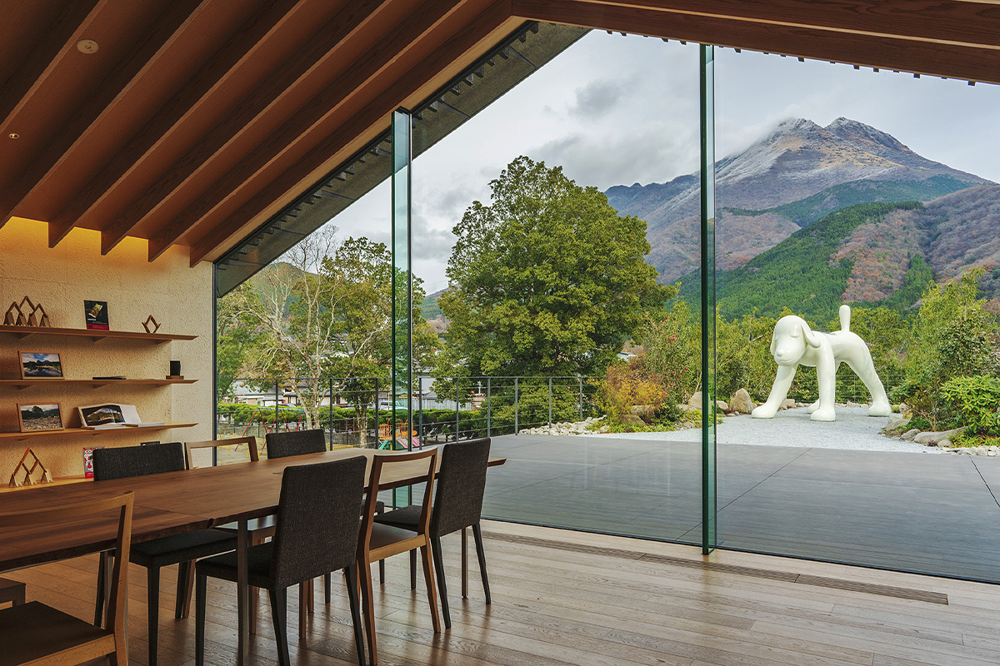

Префектура Оита · Юфуин · искусство
COMICO ART MUSEUM YUFUIN: чёрный музей Кэнго Кумы у подножия горы Юфу

Юфуин лежит в котловине среди полей и лесов, под горой Юфу. Здесь же, в чёрном здании Кэнго Кумы, собраны работы самых известных современных художников Японии, и многие из них смотрят прямо на гору.
Музей
Искусство среди полей
Юфуин, курортный городок с онсэнами в префектуре Оита, окружён деревенским пейзажем: рисовые поля, рощи, низкие крыши. COMICO ART MUSEUM YUFUIN открылся здесь в 2017 году, а в 2022 году получил новые выставочные залы. Проект расширения, как и первого здания, сделал Кэнго Кума.
В собрании работы художников, которых знают далеко за пределами Японии: Яёи Кусамы, Тацуо Миядзимы, Марико Мори, Такаси Мураками, Ёситомо Нары, Кохэя Навы и Хироси Сугимото. Чёрный фасад и вода, в которой отражается природа вокруг, перешли и в новый корпус. В открытых галереях первого и второго этажей пейзаж за стеклом работает как фон: на произведение смотришь вместе с горами.
Музей принадлежит NHN JAPAN, интернет-компании, которая видит свою задачу в том, чтобы связывать людей. Для группы это первая площадка не в сети, а в реальном мире, и создавали её как место, где серьёзным искусством можно делиться с большим числом людей. Название взято у comico, платформы той же группы, где публикуют веб-комиксы, мангу, романы и фильмы. Идея в том, чтобы к тому, что comico делает в интернете, добавить живую встречу с искусством для людей разных поколений.

Архитектура
Деревня из маленьких крыш
Символ Юфуина это гора Юфу, высокая и при этом с мягкими, плавно стекающими склонами. Музей стоит там, где её силуэт виден целиком. Работая над проектом, Кэнго Кума всё время думал о «деревне». Он разбил здание на несколько небольших объёмов с отдельными крышами, и они выстроились рядом, как дома в юфуинских посёлках. Дерево, глина, японская бумага васи и вода нужны были для того, чтобы здание с годами жило вместе с природой, а не спорило с ней.

Чёрная обшивка снаружи сделана из якисуги, обожжённого кедра. Тёмные стены будто растворяются в пейзаже, и на их фоне гора и окрестности выглядят чётче. Издалека стены кажутся просто чёрными, а вблизи видны волокна дерева, и от материала идёт тепло. С годами такое дерево становится только глубже по цвету и фактуре.
Новый корпус 2022 года должен был передать Юфуин многогранным и утончённым. Его стены из того же кедра наклонены наружу, и верх здания словно уходит в небо, а под ним остаётся больше свободного места на участке. Если медленно обойти здание, видно, как в нём работают свет, вода и ветер.
Знак
Квадрат на входе
Логотип музея вписан в квадрат. На вывеске у входа он сделан из цельной нержавеющей стали, без лишних деталей: так минимализм знака перекликается с современным искусством внутри. Квадрат здесь понимают как одну из первых форм, придуманных человеком. Знак подчеркивает то, на чём держится здание: японские материалы вроде дерева и бумаги и пустое, ничем не загромождённое пространство. И оставляет посетителю место, чтобы почувствовать материал и природу самому.

Залы
Что смотреть
На первом этаже главного корпуса два зала стоят друг против друга через бассейн с водой и смотрят друг на друга сквозь стекло. В них больше двадцати живописных работ Яёи Кусамы, среди них «Тыквы» и «Сети бесконечности». В открытой галерее второго этажа, прямо перед горой Юфу, стоит «Твоя собака» Ёситомо Нары, рядом объёмные работы Марико Мори и Кохэя Навы.
Эти три скульптуры, как и работа Тацуо Миядзимы на первом этаже нового корпуса, сделаны специально для Юфуина: места, куда едут самые разные люди, но где по-прежнему много природы. Работы Такаси Мураками и Хироси Сугимото частично меняют, так что тем, кто возвращается, есть что посмотреть заново.
«Сети бесконечности»: Яёи Кусама


В «Сетях бесконечности» сетчатый узор расходится во все стороны без конца. Свой знаменитый горох Кусама называет «позитивом», как в фотографии, а сетку, на которой он лежит, «негативом». Человек, мир и вся вселенная состоят из бесчисленного множества частиц. Собирая сети, то есть то, что осталось от горошин-частиц, Кусама пыталась увидеть собственную жизнь: всего одну горошину в бескрайней вселенной. Маленький Юфуин тоже становится видимым благодаря людям, которые здесь живут и приезжают сюда.
«Водопад времени»: Тацуо Миядзима
Главная мысль «Водопада времени» в словах «жить в настоящем». Цифры разного размера льются сверху, как вода, и обозначают время, которое не вернуть. Каждая появляется со своей скоростью, и от этого рябит в глазах. Так и жизни людей: они идут без остановки и порой пересекаются с чужими.

В Юфуине тоже сходятся очень разные судьбы: тех, кто живёт здесь много лет, тех, кто влюбился в эти места и переехал, и тех, кто приехал на несколько дней. Чувствуешь своё время и делишь его с другими: идею Миядзимы здесь можно ощутить буквально.
«Морские пейзажи»: Хироси Сугимото
Серия «Морские пейзажи», одна из главных у Сугимото, началась с вопроса, который он задал себе: можно ли сегодня увидеть то, что видели древние люди? В кадре только небо и море. Сугимото решил, что лишь они не изменились с древности до наших дней, и это же его самое первое воспоминание.

Из серии больше чем в 300 снимков в музее выставлены пять: среди них самый первый, Карибское море, озеро Верхнее, где пар над водой затягивает всё небо, и Эгейское море, где Сугимото впервые удалось снять морской туман. Здесь же стоит «Пятиярусная ступа из оптического стекла» с морским пейзажем внутри: свой внутренний пейзаж, исток сознания, автор заключил в стекло.
Скульптуры с видом на гору
Кроме этого, в музее можно увидеть «Каваии! Летние каникулы: над нами лазурное небо» Такаси Мураками с цветами, одним из его главных мотивов. «Твоя собака» Ёситомо Нары стоит у подножия горы Юфу. «Эфир (лава)» Кохэя Навы поднимается над полем щебня, привезённого с гор Кудзю, и сверкает отражённым солнцем. А «Вечное» Марико Мори, по словам художницы, посвящено горе Юфу.

Здесь стоит не спешить: слушать, как шумит вокруг Юфуин, и смотреть на искусство и архитектуру вместе.

COMICO ART MUSEUM YUFUIN
- Адрес
- префектура Оита, город Юфу, Юфуин-тё Каваками, 2995-1
- Часы работы
- 9:30–17:30 (вход до 16:00)
- Выходные
- среда раз в две недели
- Цены / Вход
- взрослые 1700 иен, студенты 1200 иен, старшеклассники и средние классы 1000 иен, младшие школьники 700 иен, дошкольники бесплатно; при бронировании онлайн скидка 200 иен
- Сайт
- camy.oita.jp